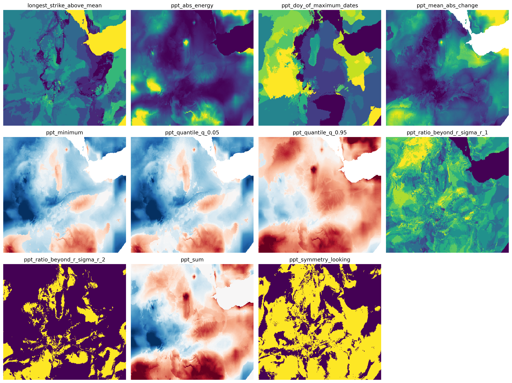

Introduction
Why xr_fresh?
xr_fresh is designed for systematic feature engineering from gridded time series data such as satellite imagery, climate models, or sensor networks. These data are typically represented as spatial grids where each pixel location contains a time series of observations. The most common ordering dimension is time (e.g., monthly composites, daily readings), but xr_fresh can work with any consistent sequential dimension.

Now you want to calculate different characteristics from each pixel’s time series—such as the maximum value, number of peaks, mean, or trend slope:
Without xr_fresh, you would have to compute each of these features manually for each pixel. xr_fresh automates this process, extracting a comprehensive set of features from every pixel’s temporal profile. It works natively with xarray and Dask, and integrates smoothly with downstream tools like scikit-learn, geopandas, and rasterio.
What can we do with these features?
The extracted features allow you to:
Describe pixel-level temporal dynamics (e.g., crop phenology, vegetation stress, urban heat changes)
Train machine learning models for classification, regression, or anomaly detection
Cluster geographies based on seasonal behavior or sensor responses
What can’t we do with xr_fresh?
Currently, xr_fresh is not designed:
for streaming or real-time data (it assumes batch processing of full raster stacks),
to directly train models (you can export features for use in other ML frameworks),
or for tasks that require joint spatiotemporal convolution (where deep learning models like ConvLSTMs may be more appropriate).
What else is out there?
There are other tools for time series analysis, such as:
tsfresh: powerful time series feature extraction for Pandas DataFrames
cesium: a web-based and Python platform for time series ML
hctsa: extensive Matlab-based time series analysis suite
However, none of these are designed for gridded image stacks. xr_fresh fills that gap.
References
Time Series FeatuRe Extraction on basis of Scalable Hypothesis tests (tsfresh – A Python package). Neurocomputing 307 (2018) 72-77, doi: 10.1016/j.neucom.2018.03.067 <https://doi.org/10.1016/j.neucom.2018.03.067>_. .. [2] Venkatachalam, S., Kacha, D., Sheth, D., Mann, M. and Jafari, A. (2024). Temporal Patterns and Pixel Precision: Satellite-Based Crop Classification Using Deep Learning and Machine Learning. Under review at IEEE Transactions on Geoscience and Remote Sensing.